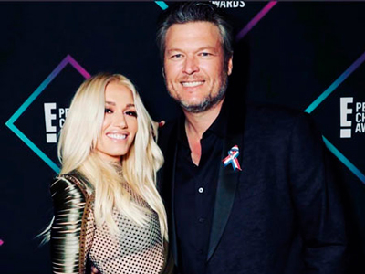

Actualidad


¡Donna en el Grinch!
La cantante colombiana Fanny Lu ha contagiado a todos de felicidad con su interpretación de la canción oficial de El Grinch. –Feliz– como se titula la canción, busca transmitir un mensaje cargado de amor y energía para aquellas personas que no están pasando por un buen momento. Sin embargo, esto no es lo único que tiene a la artista en la mira de muchos a nivel internacional, la reina del tropipop es la encargada de darle vida a Donna en la película.
Donna es un personaje con el que Fanny afirma sentirse bastante identificada; tanto la cantante como la animación son madres, protectoras y cariñosas. Donna es la mamá de Cindy, la pequeña que logra conmover al Grinch y hacerlo cambiar su opinión acerca de la navidad. Recordemos que esta no es la primera vez que Fanny Lu, le da vida a personajes a través de su voz; la colombiana fue parte del elenco de Open Season, dónde interpretó a Beth, una bella guardabosques.
¡Alkilados y Espinoza Paz!
Por primera vez, la agrupación colombiana Alkilados presenta una fusión con mariachi, se trata del tema –Ven– escrito por Espinoza Paz. Juanito y Lucho se encargaron de la producción y de poner su cuota urbana. ”A nosotros nos suena a mariachi, a Espinoza le suena a reggaetón… y eso mismo les va a pasar cuando la oigan. ¡Ven– tiene los dos, con algo de pop y nuestro sonido playero! La van a bailar, la van a cantar, le van a subir el volumen cuando la oigan en todas las plataformas, en la radio o en la discoteca.
Este tema busca romper esquemas, como lo dicen los chicos de Alkilados “nos gustan los riesgos, no negamos que no siempre hemos salido victoriosos pues la hemos embarrado, no todos los temas son éxitos”. Es el riesgo de ser innovadores.
Espinoza Paz es un referente de la música mexicana, Alkilados es la banda colombiana que evolucionó el pop a lo urbano y –Ven– es el resultado de mezclar esos dos mundos, México Y Colombia, logrando un nuevo sonido latino, una mezcla que será todo un !Hit!
¡Dejando marca en la industria musical!
Foto: Tomado de @antonioesguerra
El talentoso músico, productor e ingeniero de sonido Antonio Esguerra, lanza su segundo Sencillo C8H11N02 (Let Loose), bajo el género pop progresivo, combinando elementos musicales de otros géneros académicos tales como la música clásica, el jazz, el rock, soul y el funk. Esguerra tomó elementos de los 80 y 90 logrando un resultado con un sonido distinto y único. Dejando una marca definitiva en la industria musical como un respetable ingeniero de sonido, ha sido invitado por su alma mater, para hablar con estudiantes sobre cómo triunfar en la industria musical. Esta involucrado en producciones distinguidas como “The Sound of the King”, un concierto en vivo comisionado por El Consulado Real de Tailandia en Boston, Massachusetts, y otra producción en vivo presentando al compositor de banda sonora, y cantautor, ganador de varios premios internacionales, Shankar Mahadevan, en colaboración con Berklee.

“Canciones con mentiras”
Foto: Tomado de @mikebahia
Dándole continuidad al éxito anterior –Serenata– y dejando abierta la historia al cierre del video, Mike Bahía sorprende con su nuevo tema –Canciones con mentiras– compuesta por él y “Dim” integrante del grupo Piso 21. Este lanzamiento fue el producto de un junte de los artistas en un campamento de composición realizado por Warner Chapel.
Homenaje a la vida
Foto: Tomado de @fonsecamusic
El tan esperado nuevo álbum del cantautor colombiano y ganador de cinco Latin Grammy Fonseca, llegó el pasado 9 de noviembre bajo Sony Music Latin. La nueva producción originalmente iba a llevar el título de uno de los temas incluidos en el proyecto, pero cuando el artista se enteró de que el nacimiento de su hijo estaba previsto para la misma semana de la salida del álbum, decidió llamarlo Agustín en honor a uno de los momentos más especiales que vive. Agustín es un homenaje a la vida, y a otro de los grandes regalos que le ha brindado el universo: la música.
Maluma llena el Movistar Arena de Bogotá
Foto: Tomado de @maluma
Con uno de los mejores shows del F.A.M.E tour Maluma, es el primer colombiano en hacer un Sold Out en éste lugar, 11 mil personas, dos horas y media de show, 6 artistas invitados. Con la canción “23” abrió el show, de ahí en adelante más de 28 temas retumbaron el lugar. Entre gritos y cantos de sus fans, Maluma sintió que el cariño de sus seguidores está intacto.
¡Nuevo trabajo!
Foto: Tomado de @paulinavegadiep
Paulina Vega la ex reina se ha mantenido alejada de las cámaras y la presentación, sin embargo, sorprendió con la creación de un blog en el que tiene más contacto con sus seguidores. “Quiero que sea mi habitación secreta, el lente a través del cual veo el mundo, un rincón privado donde pueda pensar sobre la forma en que concibo la vida y todo lo que la hace digna de ser vivida, me refiero a hechos o ideas como música y cultura, estilo y viajes, tradiciones y nuevas iniciativas, diversión, comida, deporte y en general, las causas que me interesan”, afirmó. Encuéntrala como paulinavega.com.
¿Juanse Quintero cantando reguetón?
Foto: Tomado de @juanse_quintero
El actor conocido por participar en producciones como Padres e Hijos, Francisco el matemático, y presentador en el programa infantil PlayZone, sorprende a sus seguidores lanzando su primer sencillo titulado –Me trama– con una mezcla de sonidos urbanos busca incursionar en el mundo de la música; el video de este tema ya se encuentra disponible y cuenta con más de 110 mil visualizaciones.

¿Vientre de alquiler?
Foto: Tomado de @gwenstefani
Los cantantes Gwen Stefani y Blake Shelton buscan tener un hijo mediante vientre en alquiler, la famosa pareja supuestamente está ya en las últimas etapas para conseguir a la mujer cuyo vientre sería utilizado. Stefani es madre ya de tres varones de su relación anterior y Sheldon, su compañero de panel en el programa The Voice, tiene con ellos una gran relación, pero el intérprete destacado en la música Country desea su propio hijo o hija. La cantante supuestamente desearía tener una niña.
¡Oficialmente divorciado!
Foto: Tomado de @cristiancastro y @carolvic8
Éste es el estado civil de Cristian Castro. Así lo ha confirmado su madre, Verónica Castro, durante su participación en los famosos premios Fénix a los que asistió. El cantante ya no tiene nada legal que ver con su ex mujer Carol Victoria Urban, con quien vivió el matrimonio más fugaz de su historia. Nada menos que 28 días fue lo que duró la unión entre la pareja, que acabó de forma fulminante para sorpresa de todos. La separación fue de todo menos pacífica, e incluso Cristian fue demandado por la joven violinista por maltrato físico y psicológico.
¡JLo y Bad Bunny juntos!
Foto: Tomado de @badbunnypr
-Te gusté- es la nueva colaboración de JLo con Bad Bunny, en la que se muestra la sensualidad de la cantante y al rapero intentando seducirla. Este sencillo alcanzó más de 3 millones de reproducciones y logró volverse tendencia en las primeras horas después de su lanzamiento. Este video clip recrea un ambiente tropical, lo que facilita que la cantante muestre sus curvas en un sexy bikini amarillo.
¡Nuevo número, vida nueva!
Foto: Tomado de @ddlovato
La estrella de la música Demi Lovato abandonó hace unas semanas el centro de rehabilitación en el que se encontraba desde el pasado julio, cuando sufrió una sobredosis que casi le cuesta la vida, y ahora querría ejercer un mayor control en relación a la gente que puede contactarla; Demi se habría desprendido de su número de teléfono para cortar directamente aquellos lazos que le unían a ciertas personas poco convenientes para esta fase de sobriedad en la que está inmersa.
¡Veremos a una Thor mujer!
Foto: Tomado de @chrishemsworth
El actor australiano Chris Hemsworth acaba de rodar la cuarta entrega de “Avengers”, no descarta que en el futuro sea una mujer quien lo sustituya. “Seguro que sí, cuando la gente se canse de mí, me apartaré para que una mujer asuma el papel de Thor”, dijo en una entrevista; por ahora lo veremos en un rol más siniestro, como líder de una secta, en su último trabajo, “Bad Times at the El Royale”.
¡Camila Cabello por fin habla de su novio!
Foto: Tomado de @camila_cabello y @thematthewhussey
La cantante lleva casi un año de feliz relación con el británico de 31 años Matthew Hussey, a quien atribuye que al día de hoy esté viviendo la etapa más feliz de toda su vida. Aunque su noviazgo no era precisamente un secreto, ella no se había animado hasta a hablar públicamente del hombre que ha conseguido robarle el corazón. “Es muy parecido a mí, los dos somos un poco raritos, y nos gusta hacernos los tontos juntos”, ha asegurado la joven intérprete.